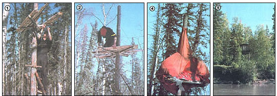
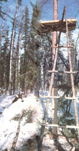

Just about everybody in the Alaskan bush uses a cache - an elevated storage shelter of one kind or another - to keep food and gear high and dry. You see, when a person is living many miles from the nearest store, protecting his or her vital supplies from the elements - and from four-legged marauders - is a downright necessity. But I'll bet that a lot of you folks in the lower forty-eight (and in the Aloha State, as well) could sometimes - for any of a number of reasons - also make use of a sturdy and secure storage loft.
Now I don't suppose that many of you are likely to need anything quite as elaborate as the big 10' X 10' log-cabin-on-stilts caches that a lot of settlers up here have built at their permanent homesteads . . . but you might have occasion to use a more temporary sort of stash. Say, for example, that you're on an extended hunting trip, and you plan to leave your base camp for several days to scout the surrounding territory. You wouldn't want to carry all your provisions with you . . . but you wouldn't want to leave any of them unprotected, either. That's one instance when you might choose to build a treetop cache of the sort my partner, Jeff Coe, put together one spring.
Jeff and I had just finished trapping in the area surrounding a tiny outpost cabin some 22 miles from home. We planned to be away from camp all summer . . . but we also knew that we'd be back later in the year to resume our activities. So it made good sense to us to construct a critter-resistant cache for storing our supplies until the next trapping season.
Well, within just a couple of hours, Jeff had assembled a strong, rustic repository . . . using little more than a few nails, some heavy wire, and two tin cans! Here's how he did it:
UP A TREE
The completed cache is about 12 feet above the ground. (The sturdy, broad-based ladder - which is kept well away from the storehouse when not in use - was fashioned from two tall spruce poles lashed together at the top and fitted with progressively widening rungs.)
My partner first chose a tall spruce about ten inches in diameter: The conifer was sturdy enough to support a substantial amount of weight, but small enough in circumference to be difficult for a bear to climb. Jeff then scrambled some 16 feet up the trunk . . . sawed off the tree at that level (he was careful, of course, to stay clear of the falling top) . . . and then - as he worked his way down - chopped of all the lower branches flush to the bark, leaving no stubs for animals to use as clawholds.
Next, my friend fashioned a makeshift (and, I must admit, rather shaky) ladder from some fallen boughs . . . he simply wired a few rungs to two parallel poles. Then Jeff lashed two 4- to 4-1/2-foot-long limbs together at right angles, to form an "X" that would serve as the main support element for the platform.
With that done, up the tree he went again (this time using his ladder!) and - wielding a small axe - chopped a horizontal notch around one side of the trunk, about four feet down from the top of the stub, into which the cross would fit snugly at the juncture of its two members. Jeff bound the wooden brace assembly in place and - to strengthen the trusses - ran wire from the four ends of the cross to a point just below the post's top, where he wrapped the metal strands tightly around the trunk several times.
With the foundation securely in place, Jeff made a raftlike floor by carefully wiring nine birch poles - each one about 4 inches in diameter and approximately 4 feet long - to the surface of the horizontal cross. He placed the "floorboards" as close together as possible, and notched the two logs adjacent to the trunk so that they'd wrap around the main stem. Then, to further brace the members, he lashed yet another stick of birch across the top of each end of the planking. His last deck-building step was to trim the lengths of flooring with a saw, cutting off any protruding ends so that the final product was an almost symmetrical 3' X 4' platform . . . plenty big enough for our needs.
Now came the finishing touches. Again using his axe, Jeff stripped the trunk of bark from about chest height down to the ground. Then, just above the pared area, he wrapped two flattened five-gallon gas cans around the pole, end to end, and nailed them in place. The barkless surface and the metal bandage would discourage squirrels and bears that might be contemplating a climb up the tree . . . and, to be sure of dissuading such critters, Jeff went on to pound several nails part way into the wood above the cans, saw of the heads, and file the protruding shafts down to form sharp points. (This protective measure isn't always necessary . . . but remember, in many cases the contents of a cache can spell the difference between survival and disaster. Some trappers, in fact, go so far as to hang huge fish hooks, or even mosquito repellent in pressurized cans that will burst if bitten, from the posts supporting their supplies!)
Finally, Jeff built a longer, better ladder to use when climbing to our storehouse. He simply lashed two tall spruce poles together at one end (the top) and then secured a series of progressively wider rungs between the two spars. The result was a very stable, broad-based inverted-V affair . . . similar to the ladders you see in many orchards. (By the way, I should mention that we always make sure to keep our portable "stairs" well away from our cache until we actually need to get something from it. Some creatures - including bears - can scramble right up such a device.)
UNDER WRAPS
Just before we left the cabin for the summer, we put all our relatively long-lasting edibles - rice, flour, sugar, and such - into glass jars and stored them in the cache . . . along with candles and any other items that we thought might be chewed up by mice if left behind in the cabin. Then Jeff carefully wrapped a large red tarp around the entire platform and its contents and wired the covering down . . . to produce a rain - and moisture - resistant, tent-shaped parcel that - we hoped - would also keep out inquisitive squirrels. In any event, the brightly colored material would be easy to spot from a plane, so we'd be able to fly over and check the condition of our supplies from time to time.
When we were satisfied that the "treetop pantry" was as securely battened down as we could make it, Jeff moved our ladder to a place where we - and only we - could find it easily. And then we headed for home . . . feeling as confident as possible that when we returned, the food rations and gear we'd need for our next trapping trip would be safely waiting.
EDITOR'S NOTE: Of course, in most areas one should cut treesonly on his or her own property . . . unless the owner of the woodlot gives specific permission.
|
 PHOTOS BY THE AUTHOR [1] Jeff wires short poles securely to the crosspieces. [2] With the floor in place, he uses a handsaw to even the platform's edges. [4] Our colorful ""wilderness minaret"" . . . raintight and (more or less) critterproof. [5] A friend's cache is a tiny cabin on four sawed-off trees. |
 |
|